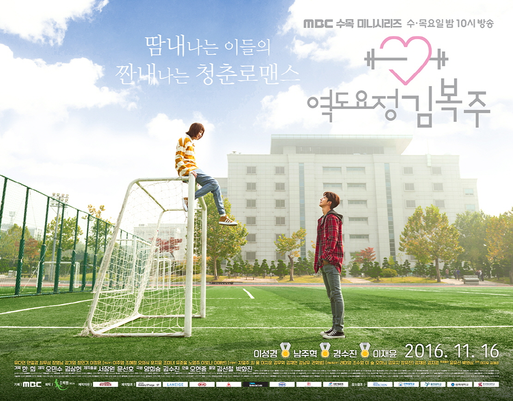

| Home | About | Cast | Highlights |
|  | Weightlifting fairy Kim Bok Joo is a coming of age drama that tells the story of athletes in college trying to achieve their dreams while enjoying their youth. it follows the story of a young woman named Bok Joo (Lee Sung-Kyung) who is majoring in weightlifting and who happens to be the ace of the team. |